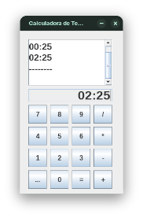

Envio de XMLs programado com relatório
Download da versão mais recente
Calculadora de horário

Download da versão mais recente
Slide da Bíblia e Hinos da Harpa


Download da versão mais recente
Cópia de arquivos

Download da versão mais recente
Backup programado